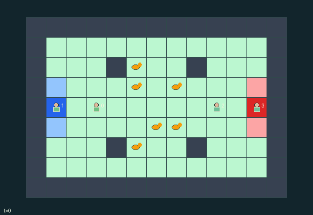

GI075 · Scentbank Scramble

Bank the six autonomous neutral grazers for one's own team using position, attraction/repulsion pucks and a teammate's bench settling.
Identity and original contract
4 independently actionable roles; 9 discrete commands per role; 868 native observation columns per role; original horizon 128 steps. Declared per-step reward range: -6 to 6. Observation regime: fully_observable.
Source SHA-256: 9d6038ab31845dc1f1ce782334c3c0dee39ee4a4be409739fc21be116f39a818
The objective, rewards, population, map and horizon remain original. A preview is not a success claim.
Objective and gameplay
Bank the six autonomous neutral grazers for one's own team using position, attraction/repulsion pucks and a teammate's bench settling.
Agents and objects occupy real cells. Wall-distance preferences drive simultaneous grazer proposals; rotating contention and consecutive teammate settling produce irreversible actual capture.
- Teams A and B each have two herders. Six neutral grazers move autonomously according to the combined public state.
- Each actor has one actual scent puck slot. Puck category 1 attracts and category 2 repels; effects use shortest paths around walls and apply regardless of owner.
- Non-settling herders repel nearby grazers. Public phase and nearby grazer crowding also affect candidate-cell scores.
- Actors and grazers use simultaneous old-occupancy rules. Contested grazer targets use rotating priority, not ID-ordered updates.
- Stand on the home bench and select settle to bank arrivals. Three consecutive valid settling transitions capture a grazer; interruptions clear progress.
- An already-arrived grazer stays while home settling is active. Opponents cannot stand on your pen/bench or cancel settling merely by proximity.
- New pucks act before their first aging decrement. Recovery starts cooldown 4; actual expiry starts cooldown 8. Charge and cooldown displays read these fields.
- A captured grazer disappears only when its active mask turns false and the real bank count increases. No invented capture path or score is shown.
- All six banked ends naturally with a winner/tie. At 128 steps an unfinished herd truncates with no claimed completed winner; natural completion has priority.
- Team categories, puck categories, positions, charge, heading and progress are state bindings. Custom per-kind art, signed field contours and score-tray flights are not encoded by this generic scene.
- All committed state is public; pending joint actions and reset keys are excluded. Old event buffers must not replay on an absorbing redraw.
- No game or animation has been executed. These are declarative bindings for a later trusted replay, not observed outcomes.
Ending: Natural completion only when all six grazers have been banked; final actual counts determine winner or tie.
What this game explores
Resource commons & externalities: An action changes a persistent resource or burden that another role also encounters. Compare extraction with maintenance and record the downstream resource trajectory.
Team opposition & interception: Cooperation within a team can coexist with opposition between teams. Preserve team membership, capture and possession rules, and report each team's outcomes instead of assuming a single shared return.
Joint transport & shared access: Positions, load geometry, occupancy and persistent access constrain whose action can succeed next. Distinguish physical handoff, shared controls and simultaneous force from a cosmetic cooperation label.
These are questions supported by rule structure, not observed learning effects.
Play it: operating walkthrough
crucibles play --game gi075Keep Python running and open its printed address. Select this game, set a seed and press Create session. The game itself is always English.
Assign a role range to Host with Assign / take over, or Assign all roles. Invite a second participant with Create player invitation, then assign a disjoint subset. Every original role is available.
For every owned role choose a legal command and press Queue. Arrow keys / WASD queue a declared directional action for the current role camera when available. Space or Advance one joint step advances everyone together. Non-directional games use the selectors.
Unqueued roles use the labelled untrained uniform-legal policy. Take over or release roles before the next step without resetting. Full-state debug is privileged and permanently logged; role cameras preserve permissions. Close the session to retain logs. Server restart does not restore sessions.
Complete command reference
IDs and English labels exactly match the manifest. Availability depends on role, resources, location and phase. An available action can still have no productive effect.
0·wait
1·move north
2·move east
3·move south
4·move west
5·place own lure puck
6·place own repeller puck
7·recover own adjacent puck
8·settle on own team's bench
Roles and capability identifiers
These original role names describe capabilities, not interchangeable skins. Check each owned role's legal selector before planning handoffs.
agent_0·team_A_herder
agent_1·team_A_herder
agent_2·team_B_herder
agent_3·team_B_herder
Information and observation permissions
All current mechanism-relevant state is public. Each actor gets the exact declared flat observations and structural masks. Actions are public only after commitment; external PRNG provenance and future submitted actions are excluded. Derived scene arrays add no policy information.
The GIF is full-state debug and may reveal hidden entities or private state. Train on obs[agent], not the picture, state tree or another role's private row. Field slices and visibility are in the original manifest.
Reinforcement-learning integration
import jax
from crucibles_jaxmarl import make
env = make("gi075")
key = jax.random.PRNGKey(0)
key, rk, ak, sk = jax.random.split(key, 4)
obs, state = jax.jit(env.reset)(rk)
actions = env.sample_actions(ak, state)
obs, state, rewards, dones, info = jax.jit(env.step_env)(sk, state, actions)
done = dones["__all__"]Observations are float32 vectors of width 868; actions are scalar int32; masks have 9 entries. Supply all 4 roles each transition. Masked sampling is an engineering reference, not a trained learner.
step_env retains terminal data without reset. step performs outer autoreset and keeps terminal data in info["raw_state"] and info["raw_observation"]. Use dones["__all__"] for episode boundaries; separate completion, failure and time limit in analysis.
JIT or vmap equal identities and shapes. Split independent reset, policy and transition keys. Group different shapes explicitly; do not shrink the population or horizon. Host rendering stays outside training.
Training questions and fair evaluation
Define valid completion from the objective before fitting. Preserve original rewards and also report real deliveries/services, losses, resource state, unresolved episodes and per-role returns. Animation is not a reward signal.
An action changes a persistent resource or burden that another role also encounters. Compare extraction with maintenance and record the downstream resource trajectory.
Cooperation within a team can coexist with opposition between teams. Preserve team membership, capture and possession rules, and report each team's outcomes instead of assuming a single shared return.
Positions, load geometry, occupancy and persistent access constrain whose action can succeed next. Distinguish physical handoff, shared controls and simultaneous force from a cosmetic cooperation label.
Compare memory, communication or centralized critics under matched actor information. Declare critic access; keep actor inputs role-filtered. Match partner/opponent distributions, masks, compute and checkpoint selection. Final tests never enter fitting or selection.
Independent training runs or source-pairing blocks are inferential units; episodes from one policy are not independent training replications. Save hashes, keys, versions, device, time and cost. Negative, zero, failed and indeterminate outcomes are valid. No trained checkpoint or target score is supplied.
Classification and evidence
Overlapping editorial labels are reading aids, not proof of novelty, difficulty, strategic equivalence or learning effects.
- Resource commons & externalities
- Evidence
manifest.task.objective: Bank the six autonomous neutral grazers for one's own team using position, attraction/repulsion pucks and a teammate's bench settling.
- Evidence
manifest.task.interaction: Agents and objects occupy real cells. Wall-distance preferences drive simultaneous grazer proposals; rotating contention and consecutive teammate settling produce irreversible actual capture.
- Evidence
scene.rules.0: Teams A and B each have two herders. Six neutral grazers move autonomously according to the combined public state.
- Team opposition & interception
- Evidence
manifest.task.interaction: Agents and objects occupy real cells. Wall-distance preferences drive simultaneous grazer proposals; rotating contention and consecutive teammate settling produce irreversible actual capture.
- Evidence
scene.rules.3: Actors and grazers use simultaneous old-occupancy rules. Contested grazer targets use rotating priority, not ID-ordered updates.
- Evidence
scene.rules.4: Stand on the home bench and select settle to bank arrivals. Three consecutive valid settling transitions capture a grazer; interruptions clear progress.
- Joint transport & shared access
- Evidence
manifest.task.objective: Bank the six autonomous neutral grazers for one's own team using position, attraction/repulsion pucks and a teammate's bench settling.
Source, receipts and preview limits
The world-only English GIF replays saved untrained legal actions through the original kernel. At most 25 actual endpoints include initial and terminal state; no invented interpolation. It is full-state debug, not the role observation.
Original source, observation slices, manifest and mechanism
Native receipt · Presentation receipt
Engineering passes do not establish learning. Nonzero floating differences remain recorded and undetermined; no new tolerance was introduced. Human scores remain unverified.